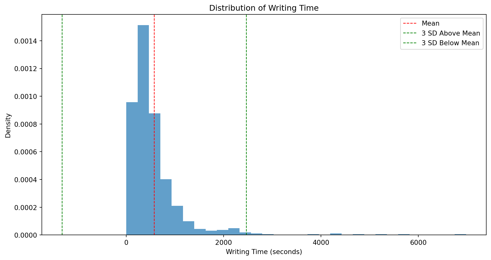
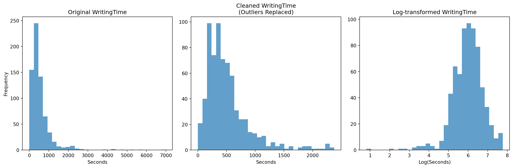
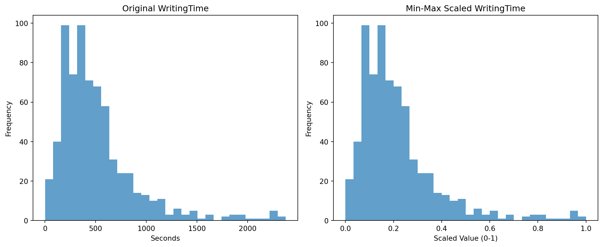

def process_log_data(df):
"""
Process log data by extracting first attempts and handling missing values
by looking at subsequent attempts.
"""
# Define identifier and repeated columns
base_cols = ['RecordID', 'ClassID', 'UserID', 'LessonID']
attempt_cols = ['LessonAttempt', 'TotalTime', 'XML']
data_cols = [f'Q{i}Data' for i in range(1, 10)]
duration_cols = [f'Q{i}Duration' for i in range(1, 10)]
# List to store processed rows
processed_data = []
# Group the data by the base columns (unique combination per record)
grouped = df.groupby(base_cols)
for name, group in grouped:
# Start with the key identifiers
row_dict = dict(zip(base_cols, name))
# For each data and duration column, pick the first non-null attempt
for col in data_cols + duration_cols:
row_dict[col] = group[col].iloc[0] # Take the first attempt
if pd.isna(row_dict[col]):
# If missing, search subsequent attempts
for attempt in range(1, len(group)):
if not pd.isna(group[col].iloc[attempt]):
row_dict[col] = group[col].iloc[attempt]
break
# Also add attempt-specific columns
row_dict['LessonAttempt'] = group['LessonAttempt'].iloc[0]
row_dict['TotalTime'] = group['TotalTime'].iloc[0]
row_dict['XML'] = group['XML'].iloc[0]
processed_data.append(row_dict)
# Convert the list of dictionaries into a DataFrame with a specified column order
result_df = pd.DataFrame(processed_data)
column_order = base_cols + ['LessonAttempt', 'TotalTime', 'XML'] + data_cols + duration_cols
return result_df[column_order]Enhancing Data Quality in Intelligent Tutoring Systems
A Pipeline for Analyzing Conversational Agent Language Style and Its Impact on Written Summaries
Abstract
This project presents a comprehensive data processing pipeline designed to enhance the quality of raw log data from an Intelligent Tutoring System (ITS) and to evaluate the impact of conversational agent language styles on the quality of written summaries. Using AutoTutor ARC, adult participants engaged in pretest and posttest lessons where the language style of the conversational agents was varied among formal, informal, and mixed modalities. The raw data, characterized by multiple attempts per participant, missing values, and skewed distributions, necessitated a systematic approach to data cleaning and transformation. Our pipeline groups data by unique identifiers, retains the first non-null responses, detects and replaces outliers, applies a logarithmic transformation to reduce skewness, and normalizes key features via min-max scaling. The resulting data not only supports robust statistical analyses but also provides clear insights into how conversational agent language style influences learning outcomes. This work underscores the importance of rigorous data preparation in ITS research and offers a replicable framework for future studies examining the efficacy of adaptive educational technologies.
Keywords
Intelligent Tutoring Systems, Conversational Agents, Educational Data Analysis
Introduction
Intelligent Tutoring Systems (ITS) have emerged as powerful tools for enhancing learning outcomes across various domains, including reading comprehension. These systems often employ conversational agents to interact with learners, providing personalized feedback and guidance. However, the effectiveness of these agents may depend on various factors, including their language style. This study investigates the impact of the conversational agents’ language style on the quality of written summaries produced by adult participants using AutoTutor ARC, an ITS designed to improve reading comprehension.
AutoTutor ARC collects extensive log data throughout the learning process, capturing participants’ interactions with the system across multiple lessons. The study design includes pretest assessments (lessons 2 and 3) and posttest assessments (lessons 9 and 10), enabling the comparison of performance before and after the intervention. The conversational agents’ language style is varied between formal, informal, and mixed styles to assess its influence on learning outcomes.
Given the inherent complexity of the raw log data, which is characterized by multiple attempts per participant and a diverse range of data formats, a systematic data processing pipeline is crucial. This pipeline aims to prepare the data for meaningful analysis by addressing common issues such as missing values, outliers, and skewed distributions. Furthermore, feature engineering techniques are employed to better capture the relevant variables for subsequent statistical analysis.
The present assignment focuses on the importance of numerical data in the context of this study, discussing its background, related work, and techniques. Moreover, it provides considerations and cautions when dealing with numerical data in the realm of machine learning and ITS research. By examining the role of data preparation in the AutoTutor ARC study, this assignment contributes to the broader understanding of how data processing techniques can support the evaluation and improvement of ITS interventions.
Methods
The methodological framework for this project can be summarized in the following steps:
Data Ingestion and Preliminary Cleaning:
Raw data is imported from an Excel file hosted on Google Drive. Unique identifiers (e.g., student IDs, lesson IDs) are used to group the data, ensuring that, for each participant, only the earliest non-null response is retained when multiple attempts are recorded.Feature Engineering and Labeling:
A new variable is introduced to distinguish between pretest and posttest conditions, based on the lesson identifier. In addition, specific columns are renamed for clarity (e.g., renamingQ5DurationtoWritingTime).Visualization and Descriptive Analysis:
Histograms and summary statistics are generated to examine the distribution of the writing time data, revealing the presence of outliers and a highly skewed distribution.Outlier Treatment and Data Transformation:
Outliers are identified using a three-standard-deviation rule and are replaced with lesson-specific means. A logarithmic transformation is then applied to reduce the skewness of the writing time variable, resulting in a distribution more amenable to parametric analysis.Feature Scaling:
The writing time variable is normalized using min-max scaling to facilitate further analysis and potential machine learning applications.Data Quality Assurance and Aggregation:
Duplicate records and missing values are identified and addressed. Finally, the dataset is aggregated by test condition (pretest vs. posttest) to generate summary statistics that inform subsequent analyses.
Implementation Details
Data Preprocessing: Handling Multiple Attempts
The core preprocessing is encapsulated in the process_log_data function. This function takes a raw DataFrame, groups records by unique identifiers (e.g., student and lesson IDs), and then selects the first non-null response for each repeated measure (such as responses to multiple questions or their corresponding durations).
Key aspects of the function include:
- Grouping: Data is grouped by
RecordID,ClassID,UserID, andLessonIDto handle multiple attempts by the same student. - Iteration: For each group, the function selects the first non-null value for each data and duration column, preserving the earliest response.
- Output: The function returns a cleaned DataFrame with a single row per unique record, with logically ordered columns.
Loading Data
In this segment, the code reads an Excel file containing the log data. This file holds data from multiple lessons that are later used to compare pretest and posttest performance.
import pandas as pd
pd.set_option('display.max_columns', None)
summary_log_data = pd.read_excel(
'/Users/john/Library/CloudStorage/Box-Box/Website/educ_6190_001/assignments/assignment_1/mnt/data/summary_data_-_lesson_2-3-9-10.xlsx',
sheet_name='Sheet1'
)Applying the Processing Function and Creating a Test Variable
The raw data is processed using our custom function.
processed_df = process_log_data(summary_log_data)
processed_df.head()| RecordID | ClassID | UserID | LessonID | LessonAttempt | TotalTime | XML | Q1Data | Q2Data | Q3Data | Q4Data | Q5Data | Q6Data | Q7Data | Q8Data | Q9Data | Q1Duration | Q2Duration | Q3Duration | Q4Duration | Q5Duration | Q6Duration | Q7Duration | Q8Duration | Q9Duration | |
|---|---|---|---|---|---|---|---|---|---|---|---|---|---|---|---|---|---|---|---|---|---|---|---|---|---|
| 0 | 1 | formal | formal5_02 | lesson2 | 1 | 379.071 | Lesson2-Flood.xml | Next | Arousal8_Pleasant8 | 2.0 | 3.0 | Floods are one of the most common natural disa... | 4.0 | 6.0 | 3.0 | 3.0 | 72.531 | 7.484 | 19.874 | 8.031 | 177.328 | 6.750 | 23.859 | 35.843 | 15.156 |
| 1 | 2 | formal | formal5_02 | lesson3 | 1 | 358.535 | Lesson3-Hurricane.xml | Next | Arousal9_Pleasant5 | 1.0 | 1.0 | The two most destructive hurricanes to ever hi... | 6.0 | 2.0 | 1.0 | 6.0 | 119.062 | 4.593 | 4.999 | 3.890 | 119.484 | 3.000 | 28.343 | 20.140 | 40.203 |
| 2 | 3 | formal | formal5_02 | lesson9 | 1 | 452.599 | Lesson9-Job.xml | Next | Arousal9_Pleasant5 | 1.0 | 5.0 | The United States job market has deteriorated.... | 3.0 | 4.0 | 5.0 | 2.0 | 71.531 | 6.796 | 2.687 | 3.828 | 202.812 | 4.609 | 97.828 | 25.796 | 24.296 |
| 3 | 4 | formal | formal5_02 | lesson10 | 1 | 395.415 | Lesson10-Butterfly.xml | Next | Arousal5_Pleasant5 | 2.0 | 3.0 | The butterfly and the moth have a lot of thing... | 3.0 | 1.0 | 4.0 | 6.0 | 73.031 | 6.078 | 4.078 | 3.890 | 227.796 | 3.718 | 22.093 | 21.078 | 21.031 |
| 4 | 5 | formal | formal16_02 | lesson2 | 1 | 537.568 | Lesson2-Flood.xml | Next | Arousal7_Pleasant3 | 2.0 | 3.0 | Flood is one of the natural disaster that crea... | 3.0 | 4.0 | 5.0 | 4.0 | 27.437 | 14.343 | 19.828 | 6.968 | 377.781 | 7.625 | 6.765 | 21.375 | 14.875 |
After processing the raw data with the custom function, a new column (test) is created to distinguish between pretest (lessons 2 and 3) and posttest (lessons 9 and 10) conditions. The mapping is verified by printing the distribution of the test types and a sample of the processed data.
processed_df['test'] = processed_df['LessonID'].map({
'lesson2': 'pretest',
'lesson3': 'pretest',
'lesson9': 'posttest',
'lesson10': 'posttest'
})
print("\nDistribution of test types:")
print(processed_df['test'].value_counts())
print("\nSample of processed data with test variable:")
print(processed_df[['LessonID', 'test']].head(10))
Distribution of test types:
test
posttest 386
pretest 381
Name: count, dtype: int64
Sample of processed data with test variable:
LessonID test
0 lesson2 pretest
1 lesson3 pretest
2 lesson9 posttest
3 lesson10 posttest
4 lesson2 pretest
5 lesson3 pretest
6 lesson9 posttest
7 lesson10 posttest
8 lesson2 pretest
9 lesson3 pretestRenaming and Visualizing the Writing Time Variable
For clarity, the column Q5Duration is renamed to WritingTime. A histogram is then plotted to visualize the distribution of writing time, with vertical lines indicating the mean and the thresholds defined by three standard deviations.
from matplotlib import pyplot as plt
# Rename for clarity
processed_df = processed_df.rename(columns={'Q5Duration': 'WritingTime'})
# Plot histogram with mean and ±3 standard deviations
plt.figure(figsize=(12, 6))
plt.hist(processed_df['WritingTime'], bins=30, density=True, alpha=0.7)
plt.axvline(processed_df['WritingTime'].mean(), color='red', linestyle='dashed', linewidth=1, label='Mean')
plt.axvline(processed_df['WritingTime'].mean() + 3*processed_df['WritingTime'].std(),
color='green', linestyle='dashed', linewidth=1, label='3 SD Above Mean')
plt.axvline(processed_df['WritingTime'].mean() - 3*processed_df['WritingTime'].std(),
color='green', linestyle='dashed', linewidth=1, label='3 SD Below Mean')
plt.xlabel('Writing Time (seconds)')
plt.ylabel('Density')
plt.title('Distribution of Writing Time')
plt.legend()
plt.show()(array([9.57302808e-04, 1.51315605e-03, 8.77012895e-04, 4.01449564e-04,
2.09989003e-04, 9.88183543e-05, 4.32330300e-05, 3.08807357e-05,
3.70568829e-05, 4.94091772e-05, 1.85284414e-05, 1.23522943e-05,
6.17614715e-06, 0.00000000e+00, 0.00000000e+00, 0.00000000e+00,
6.17614715e-06, 0.00000000e+00, 1.23522943e-05, 0.00000000e+00,
6.17614715e-06, 0.00000000e+00, 6.17614715e-06, 0.00000000e+00,
6.17614715e-06, 0.00000000e+00, 0.00000000e+00, 0.00000000e+00,
0.00000000e+00, 6.17614715e-06]),
array([1.26500000e+00, 2.33898967e+02, 4.66532933e+02, 6.99166900e+02,
9.31800867e+02, 1.16443483e+03, 1.39706880e+03, 1.62970277e+03,
1.86233673e+03, 2.09497070e+03, 2.32760467e+03, 2.56023863e+03,
2.79287260e+03, 3.02550657e+03, 3.25814053e+03, 3.49077450e+03,
3.72340847e+03, 3.95604243e+03, 4.18867640e+03, 4.42131037e+03,
4.65394433e+03, 4.88657830e+03, 5.11921227e+03, 5.35184623e+03,
5.58448020e+03, 5.81711417e+03, 6.04974813e+03, 6.28238210e+03,
6.51501607e+03, 6.74765003e+03, 6.98028400e+03]),
<BarContainer object of 30 artists>)Text(0.5, 0, 'Writing Time (seconds)')Text(0, 0.5, 'Density')Text(0.5, 1.0, 'Distribution of Writing Time')
print("\nWriting Time Summary Statistics:")
print(processed_df['WritingTime'].describe())
print(f"\nSkewness: {processed_df['WritingTime'].skew():.2f}")
Writing Time Summary Statistics:
count 696.000000
mean 572.174059
std 630.892576
min 1.265000
25% 251.722250
50% 405.382500
75% 644.047000
max 6980.284000
Name: WritingTime, dtype: float64
Skewness: 4.77Outlier Replacement and Log Transformation
To address skewness and outliers in the WritingTime variable, the code: - Computes acceptable bounds (mean ± 3 standard deviations). - Replaces values outside these bounds with the lesson-specific mean. - Applies a logarithmic transformation (using np.log(x + 1)) to compress the scale of higher values and stabilize variance.
Descriptive statistics and skewness values are compared across the original, cleaned, and log-transformed data, demonstrating the effectiveness of these preprocessing steps.
import numpy as np
# Calculate mean, standard deviation, and bounds for outlier detection
mean = processed_df['WritingTime'].mean()
std = processed_df['WritingTime'].std()
lower_bound = mean - 3 * std
upper_bound = mean + 3 * std
# Preserve the original writing times
processed_df['WritingTime_original'] = processed_df['WritingTime']
# Replace outliers with the mean writing time of the corresponding lesson
lesson_means = processed_df.groupby('LessonID')['WritingTime'].transform('mean')
mask = (processed_df['WritingTime'] < lower_bound) | (processed_df['WritingTime'] > upper_bound)
processed_df.loc[mask, 'WritingTime'] = lesson_means[mask]
# Apply a log transformation to the cleaned writing times
processed_df['WritingTime_log'] = np.log(processed_df['WritingTime'] + 1)
# Display statistics for each transformation stage
print("Original WritingTime Statistics:")
print(processed_df['WritingTime_original'].describe())
print("\nSkewness (original):", processed_df['WritingTime_original'].skew())
print("\nCleaned WritingTime Statistics:")
print(processed_df['WritingTime'].describe())
print("\nSkewness (cleaned):", processed_df['WritingTime'].skew())
print("\nLog-transformed WritingTime Statistics:")
print(processed_df['WritingTime_log'].describe())
print("\nSkewness (log-transformed):", processed_df['WritingTime_log'].skew())Original WritingTime Statistics:
count 696.000000
mean 572.174059
std 630.892576
min 1.265000
25% 251.722250
50% 405.382500
75% 644.047000
max 6980.284000
Name: WritingTime_original, dtype: float64
Skewness (original): 4.774762070142547
Cleaned WritingTime Statistics:
count 696.000000
mean 512.355243
std 391.086600
min 1.265000
25% 251.722250
50% 405.382500
75% 626.499750
max 2375.579000
Name: WritingTime, dtype: float64
Skewness (cleaned): 2.0766269712768888
Log-transformed WritingTime Statistics:
count 696.000000
mean 5.979808
std 0.782562
min 0.817575
25% 5.532290
50% 6.007293
75% 6.441735
max 7.773417
Name: WritingTime_log, dtype: float64
Skewness (log-transformed): -1.0692825002709074Visual Comparison of Distribution Transformations
A three-panel plot compares the original, cleaned, and log-transformed distributions side by side. This visual comparison highlights: - The strong positive skew in the original data. - The reduction of extreme values in the cleaned data. - The near-symmetric distribution achieved after log transformation.
plt.figure(figsize=(15, 5))
# Original data distribution
plt.subplot(131)
plt.hist(processed_df['WritingTime_original'], bins=30, alpha=0.7)
plt.title('Original WritingTime')
plt.xlabel('Seconds')
plt.ylabel('Frequency')
# Cleaned data distribution (with outliers replaced)
plt.subplot(132)
plt.hist(processed_df['WritingTime'], bins=30, alpha=0.7)
plt.title('Cleaned WritingTime\n(Outliers Replaced)')
plt.xlabel('Seconds')
# Log-transformed distribution
plt.subplot(133)
plt.hist(processed_df['WritingTime_log'], bins=30, alpha=0.7)
plt.title('Log-transformed WritingTime')
plt.xlabel('Log(Seconds)')
plt.tight_layout()
plt.show()(array([155., 245., 142., 65., 34., 16., 7., 5., 6., 8., 3.,
2., 1., 0., 0., 0., 1., 0., 2., 0., 1., 0.,
1., 0., 1., 0., 0., 0., 0., 1.]),
array([1.26500000e+00, 2.33898967e+02, 4.66532933e+02, 6.99166900e+02,
9.31800867e+02, 1.16443483e+03, 1.39706880e+03, 1.62970277e+03,
1.86233673e+03, 2.09497070e+03, 2.32760467e+03, 2.56023863e+03,
2.79287260e+03, 3.02550657e+03, 3.25814053e+03, 3.49077450e+03,
3.72340847e+03, 3.95604243e+03, 4.18867640e+03, 4.42131037e+03,
4.65394433e+03, 4.88657830e+03, 5.11921227e+03, 5.35184623e+03,
5.58448020e+03, 5.81711417e+03, 6.04974813e+03, 6.28238210e+03,
6.51501607e+03, 6.74765003e+03, 6.98028400e+03]),
<BarContainer object of 30 artists>)Text(0.5, 1.0, 'Original WritingTime')Text(0.5, 0, 'Seconds')Text(0, 0.5, 'Frequency')(array([21., 40., 99., 74., 99., 71., 68., 58., 31., 24., 24., 14., 13.,
10., 11., 3., 6., 3., 5., 1., 3., 0., 2., 3., 3., 1.,
1., 1., 5., 2.]),
array([1.2650000e+00, 8.0408800e+01, 1.5955260e+02, 2.3869640e+02,
3.1784020e+02, 3.9698400e+02, 4.7612780e+02, 5.5527160e+02,
6.3441540e+02, 7.1355920e+02, 7.9270300e+02, 8.7184680e+02,
9.5099060e+02, 1.0301344e+03, 1.1092782e+03, 1.1884220e+03,
1.2675658e+03, 1.3467096e+03, 1.4258534e+03, 1.5049972e+03,
1.5841410e+03, 1.6632848e+03, 1.7424286e+03, 1.8215724e+03,
1.9007162e+03, 1.9798600e+03, 2.0590038e+03, 2.1381476e+03,
2.2172914e+03, 2.2964352e+03, 2.3755790e+03]),
<BarContainer object of 30 artists>)Text(0.5, 1.0, 'Cleaned WritingTime\n(Outliers Replaced)')Text(0.5, 0, 'Seconds')(array([ 1., 0., 0., 0., 0., 1., 0., 1., 1., 0., 2., 3., 3.,
5., 3., 1., 7., 19., 43., 64., 58., 93., 97., 93., 79., 48.,
33., 19., 9., 13.]),
array([0.81757476, 1.04943618, 1.2812976 , 1.51315902, 1.74502044,
1.97688186, 2.20874327, 2.44060469, 2.67246611, 2.90432753,
3.13618895, 3.36805037, 3.59991179, 3.83177321, 4.06363463,
4.29549605, 4.52735747, 4.75921889, 4.99108031, 5.22294173,
5.45480314, 5.68666456, 5.91852598, 6.1503874 , 6.38224882,
6.61411024, 6.84597166, 7.07783308, 7.3096945 , 7.54155592,
7.77341734]),
<BarContainer object of 30 artists>)Text(0.5, 1.0, 'Log-transformed WritingTime')Text(0.5, 0, 'Log(Seconds)')
Feature Scaling: Min-Max Normalization
The cleaned WritingTime variable is scaled to a [0, 1] range using min-max normalization. Although this step does not alter the distribution’s skewness, it standardizes the data for algorithms that require features on a similar scale.
processed_df['WritingTime_scale'] = (
(processed_df['WritingTime'] - processed_df['WritingTime'].min()) /
(processed_df['WritingTime'].max() - processed_df['WritingTime'].min())
)
print("Original WritingTime Statistics:")
print(processed_df['WritingTime'].describe())
print("\nSkewness (original):", processed_df['WritingTime'].skew())
print("\nMin-Max Scaled WritingTime Statistics:")
print(processed_df['WritingTime_scale'].describe())
print("\nSkewness (scaled):", processed_df['WritingTime_scale'].skew())Original WritingTime Statistics:
count 696.000000
mean 512.355243
std 391.086600
min 1.265000
25% 251.722250
50% 405.382500
75% 626.499750
max 2375.579000
Name: WritingTime, dtype: float64
Skewness (original): 2.0766269712768888
Min-Max Scaled WritingTime Statistics:
count 696.000000
mean 0.215258
std 0.164716
min 0.000000
25% 0.105486
50% 0.170204
75% 0.263333
max 1.000000
Name: WritingTime_scale, dtype: float64
Skewness (scaled): 2.076626971276889A side-by-side histogram confirms that the underlying distribution shape remains unchanged after scaling.
plt.figure(figsize=(12, 5))
# Original distribution
plt.subplot(121)
plt.hist(processed_df['WritingTime'], bins=30, alpha=0.7)
plt.title('Original WritingTime')
plt.xlabel('Seconds')
plt.ylabel('Frequency')
# Scaled distribution
plt.subplot(122)
plt.hist(processed_df['WritingTime_scale'], bins=30, alpha=0.7)
plt.title('Min-Max Scaled WritingTime')
plt.xlabel('Scaled Value (0-1)')
plt.ylabel('Frequency')
plt.tight_layout()
plt.show()(array([21., 40., 99., 74., 99., 71., 68., 58., 31., 24., 24., 14., 13.,
10., 11., 3., 6., 3., 5., 1., 3., 0., 2., 3., 3., 1.,
1., 1., 5., 2.]),
array([1.2650000e+00, 8.0408800e+01, 1.5955260e+02, 2.3869640e+02,
3.1784020e+02, 3.9698400e+02, 4.7612780e+02, 5.5527160e+02,
6.3441540e+02, 7.1355920e+02, 7.9270300e+02, 8.7184680e+02,
9.5099060e+02, 1.0301344e+03, 1.1092782e+03, 1.1884220e+03,
1.2675658e+03, 1.3467096e+03, 1.4258534e+03, 1.5049972e+03,
1.5841410e+03, 1.6632848e+03, 1.7424286e+03, 1.8215724e+03,
1.9007162e+03, 1.9798600e+03, 2.0590038e+03, 2.1381476e+03,
2.2172914e+03, 2.2964352e+03, 2.3755790e+03]),
<BarContainer object of 30 artists>)Text(0.5, 1.0, 'Original WritingTime')Text(0.5, 0, 'Seconds')Text(0, 0.5, 'Frequency')(array([21., 40., 99., 74., 99., 71., 68., 58., 31., 24., 24., 14., 13.,
10., 11., 3., 6., 3., 5., 1., 3., 0., 2., 3., 3., 1.,
1., 1., 5., 2.]),
array([0. , 0.03333333, 0.06666667, 0.1 , 0.13333333,
0.16666667, 0.2 , 0.23333333, 0.26666667, 0.3 ,
0.33333333, 0.36666667, 0.4 , 0.43333333, 0.46666667,
0.5 , 0.53333333, 0.56666667, 0.6 , 0.63333333,
0.66666667, 0.7 , 0.73333333, 0.76666667, 0.8 ,
0.83333333, 0.86666667, 0.9 , 0.93333333, 0.96666667,
1. ]),
<BarContainer object of 30 artists>)Text(0.5, 1.0, 'Min-Max Scaled WritingTime')Text(0.5, 0, 'Scaled Value (0-1)')Text(0, 0.5, 'Frequency')
Data Quality Assurance and Aggregation
Additional steps include: - Checking for and confirming the absence of duplicate records.
# Check duplicates
print("Number of duplicates:", processed_df.duplicated().sum())Number of duplicates: 0- Identifying missing values and removing rows with incomplete key columns.
# Check missing values
print("\nMissing values in relevant columns:")
print(processed_df[['WritingTime', 'WritingTime_log', 'WritingTime_scale', 'test']].isnull().sum())
# Remove rows with missing values if any exist
processed_df = processed_df.dropna(subset=['WritingTime', 'WritingTime_log', 'WritingTime_scale', 'test'])
Missing values in relevant columns:
WritingTime 71
WritingTime_log 71
WritingTime_scale 71
test 0
dtype: int64- Aggregating summary statistics by test condition (pretest vs. posttest).
grouped_stats = processed_df.groupby('test').agg({
'WritingTime_log': ['mean', 'std'],
'WritingTime_scale': ['mean', 'std']
}).round(3)
print("\nDescriptive Statistics by Test Group:")
print(grouped_stats)
Descriptive Statistics by Test Group:
WritingTime_log WritingTime_scale
mean std mean std
test
posttest 6.007 0.786 0.224 0.176
pretest 5.953 0.779 0.207 0.153- Saving the processed dataset as a CSV file for future analysis.
# Save the processed DataFrame for future analysis
processed_df.to_csv('assign1_summary_log.csv', index=False)Conclusion
This project implements a comprehensive data processing pipeline designed to prepare raw log data for statistical analysis and machine learning applications. The key steps include:
- Importing raw data from an Excel file.
- Processing multiple attempts per student by grouping and selecting the first non-null response.
- Creating a test label to distinguish between pretest and posttest conditions.
- Renaming and visualizing a key performance metric (WritingTime).
- Identifying and replacing outliers, followed by a log transformation to reduce skewness.
- Normalizing the data using min-max scaling.
- Ensuring data quality by checking for duplicates and handling missing values.
- Aggregating summary statistics by test type and saving the cleaned dataset.
This systematic approach not only cleans and prepares the data but also enhances its suitability for subsequent statistical tests and modeling. Ultimately, the refined data supports more accurate and meaningful conclusions about the effects of conversational agent language style on learning outcomes within ITS environments.
References
Anthropic. 2024a. “Claude 3 Opus.” Large language model. https://claude.ai/.
———. 2024b. “Claude 3.5 Sonnet.” Large language model. https://claude.ai/.
Awawdeh, Moath, Tarig Faisal, Anees Bashir, and Amjad Sheikh. 2019. “Application of Outlier Detection Using Re-Weighted Least Squares and r-Squared for IoT Extracted Data.” In 2019 Advances in Science and Engineering Technology International Conferences (ASET), 1–6. IEEE.
OpenAI. 2025. “O3-Mini (High).” Large language model. https://chatgpt.com/.
Osborne, Jason W. 2012. Best Practices in Data Cleaning: A Complete Guide to Everything You Need to Do Before and After Collecting Your Data. Sage publications.
Pek, Jolynn, Octavia Wong, and AC Wong. 2017. “Data Transformations for Inference with Linear Regression: Clarifications and Recommendations.” Practical Assessment, Research, and Evaluation 22 (1).
Zheng, Alice, and Amanda Casari. 2018. Feature Engineering for Machine Learning: Principles and Techniques for Data Scientists. O’Reilly Media, Inc.